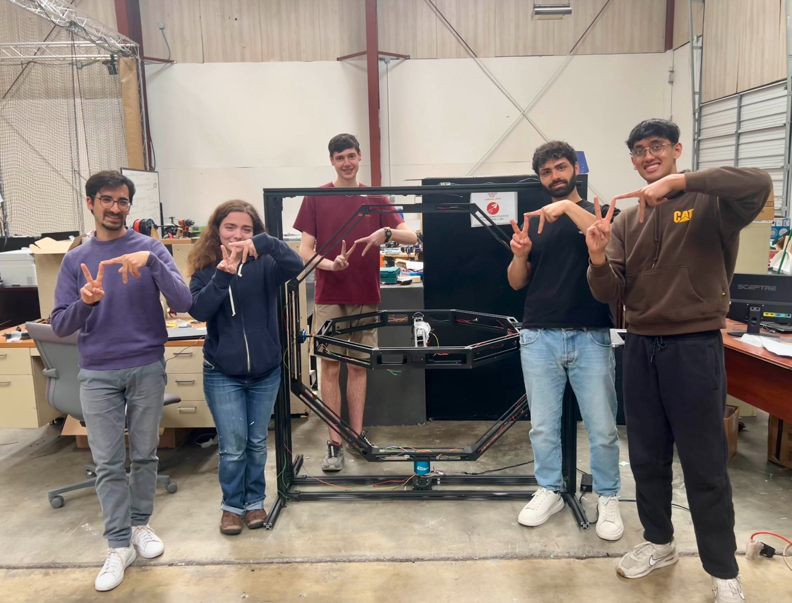

Problem
Tuning UAS controllers directly in flight is slow and risky. Under Dr. L'Afflitto, our undergraduate research focused on a NAVAIR-funded testbed that could expose roll, pitch, and yaw behavior while keeping the aircraft constrained and measurable.
What I Built
- Helped redesign, reassemble, rewire, and document a lighter three-degree-of-freedom thrust stand after prior yaw-axis inertia created motor-load problems.
- Integrated Pixhawk 6C with an Odroid M1S running ROS 2 Galactic and the ACSL flight stack.
- Implemented C++ ROS 2 nodes for Dynamixel current control and moment cancellation using inertia and rigid-body moment models.
- Supported MATLAB genetic-algorithm workflows for inner-loop PID tuning and performance-index evaluation.

Engineering Detail
The software stack connected PX4 vehicle odometry, Dynamixel MX-series current commands, filtered body-rate derivatives, and inertia matrices for the UAV and thrust-stand rings. The control code used torque computation terms of the form I alpha plus omega cross I omega, then mapped command torques into motor-current limits.
In simulation, the project used SolidWorks-exported CAD bodies through PyChrono to reason about body frames, inertia, center-of-mass placement, and actuation constraints before relying on hardware tests.

Outcome
The project produced a usable setup manual, hardware wiring guidance, ROS 2 build/run workflow, data logging procedure, troubleshooting path, and a foundation for iterative controller tuning experiments. I also presented this research through the AirTalent Symposium.